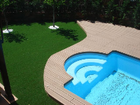
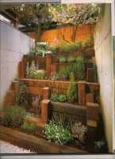
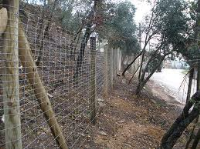

Madera
Porches, Tarimas, Caseta, Playas, Muros, etc
Trabajamos madera naturales y tecnológicas para la creación de Porches, Escaleras, Muros, Playas, Vallados, etc
También realizamos la instalación de estructuras adquiridas por el cliente como casetas, cubiertas de piscina, etc
Porches
Con alma aislante
Auténticos porches rústicos, con base en piedra, madera antigrietas y lo más importante, diferentes diseños del dibujo del voladizos y el alma del tejado con Goretex, Tableros alu leer más
Tarimas
Zonas de estar, Playas de Piscinas, etc
Trabajamos maderas naturales y tecnológicas para todo tipo de enfoque; Playas de piscinas, zonas de estar, escaleras, fachadas, etc Mantenimiento y recuperación de superficies dañadas leer más
Muros
Contrafuertes, Terrazas, etc
Realizamos muros para sujetar desniveles en jardines, crear terraza, etc leer más
Vallados
Simple torsión, Madera, Panel Hércules, etc
Vallados agrícolas, ganaderos, etc en madera total o poste de madera y cierre con malla ganadera o de simple torsión. Realizamos la instalación de vallado metálicos integros con leer más